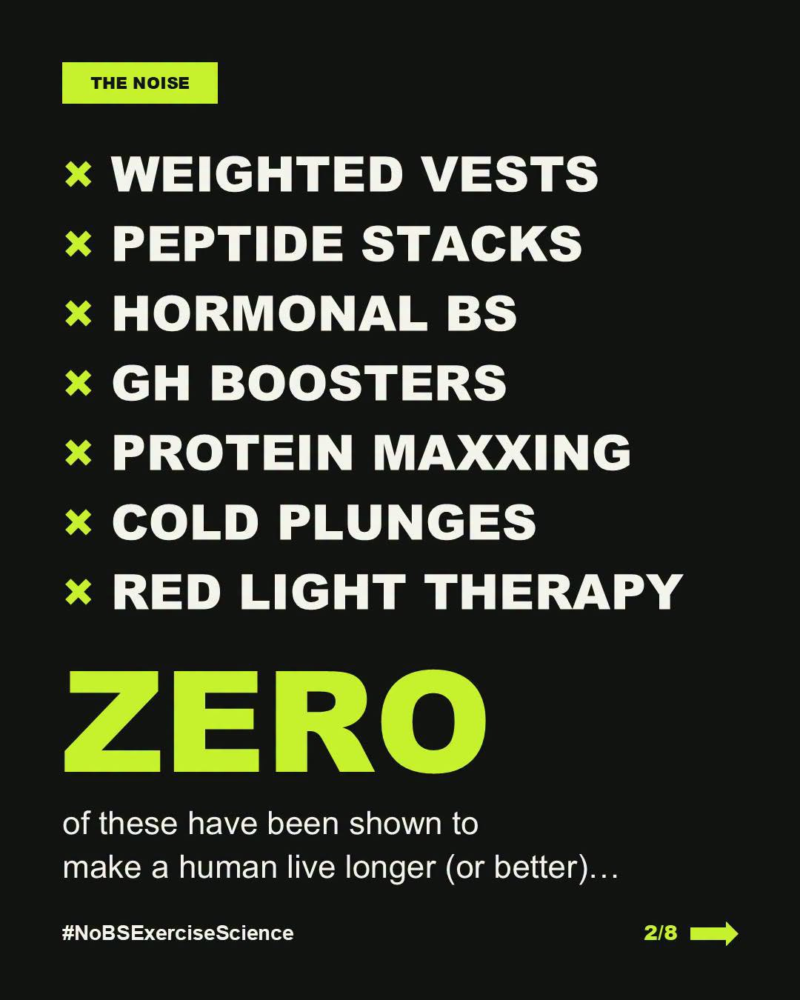
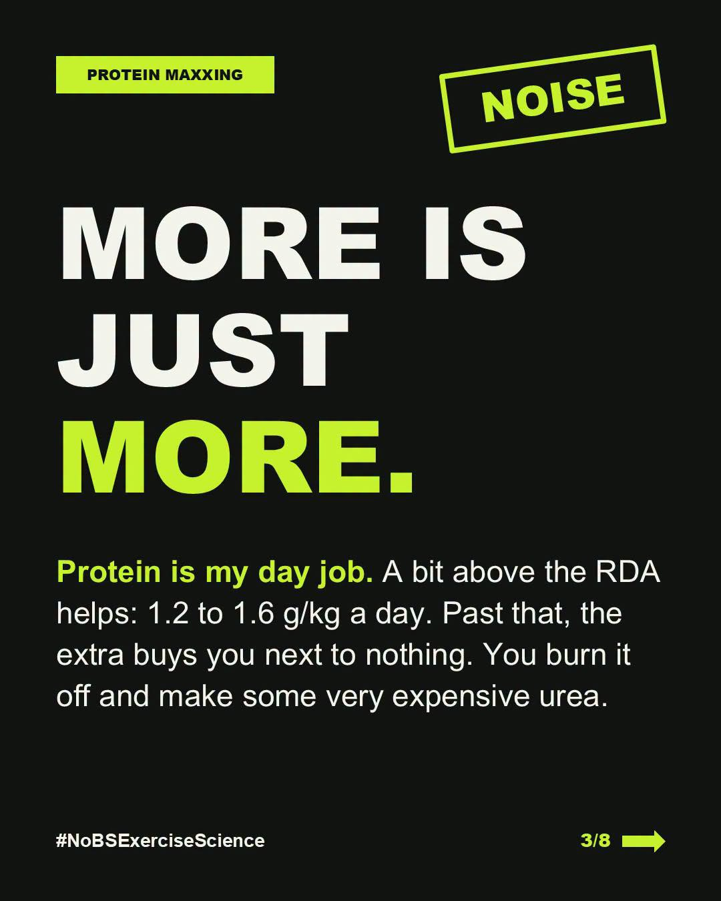
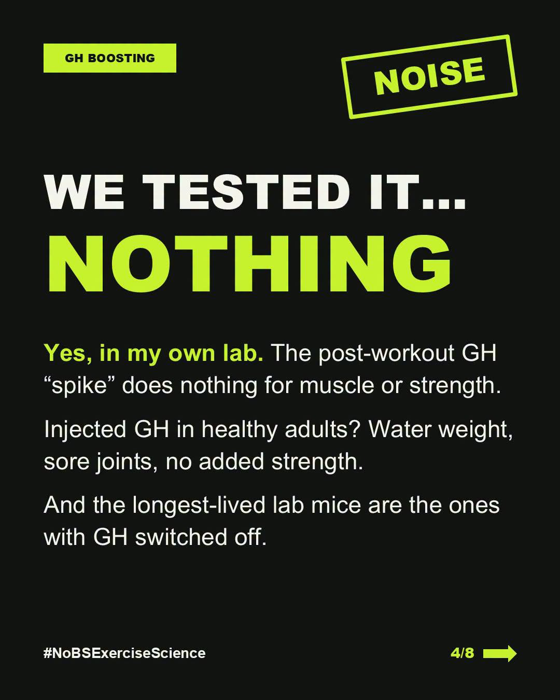
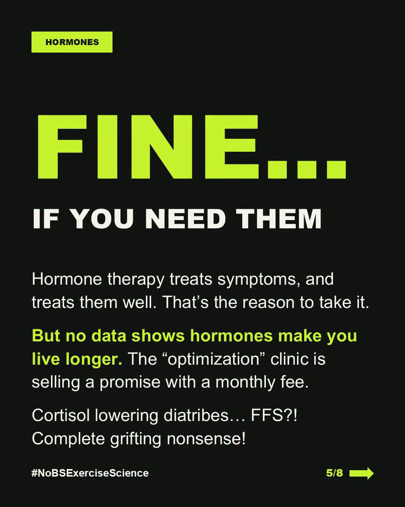

He tells the truth about what the preponderance of evidence actually shows.
Quoted:
“Protein is my day job, so this one stings. A bit above the RDA helps, more so if you lift or you're older. Past 1.6 g/kg a day the extra does next to nothing (4). More is just more.”
—Stuart Philips
#stuartphilipsHD #proteinHD
It’s all bull. The wellness-optimized seminars, the anti-cortisol lifestyle, the cold plunge, the red light, the instant consult, the peptide sh*t, all of it sold as a way to live longer. I’ve done human research for 33 years. Keep your money.
None of it has been shown to make a human being live longer. A weighted vest worn about seven hours a day for a year did nothing to protect hip bone during weight loss (1). Growth hormone in healthy older adults shuffles a couple of kilos of body composition and hands you swollen ankles and sore joints, and likely you're going to live shorter (2). And that post-workout hormone “spike” people chase (or avoid - cortisol, much?) We tested it in my lab. Nothing for muscle, nothing for strength or muscle (3).
Protein is my day job, so this one stings. A bit above the RDA helps, more so if you lift or you’re older. Past 1.6 g/kg a day the extra does next to nothing (4). More is just more.
Hormones are a different conversation. Got symptoms? Hormone therapy works, and that’s a good reason to take it. It isn’t a longevity drug. Eighteen years of follow-up in the WHI trials and the death rate was no different, hormones or placebo (5). T for women... the latest 'hack' NO DATA
What’s worth chasing is better years. Move most days and lift something. Eat a prudent diet (there are lots of them). Sleep. Turn down the chronic stress. And look after your friends: across 148 studies, stronger social ties came with a 50% greater likelihood of survival (6).
Boring? Completely. It’s also the only part of this that isn’t bull. Nobody gets rich selling it to you, which is why you keep hearing about the vest. Send this to the friend going to teh special access seminar taking the cold plunge.
References: 1. Beavers KM, et al. JAMA Netw Open. 2025;8(6):e2516772. 2. Liu H, et al. Ann Intern Med. 2007;146(2):104-115. 3. West DWD, et al. J Appl Physiol. 2010;108(1):60-67. 4. Morton RW, et al. Br J Sports Med. 2018;52(6):376-384. 5. Manson JE, et al. JAMA. 2017;318(10):927. 6. Holt-Lunstad J, et al. PLoS Med. 2010;7(7):e1000316.
#evidencebased




